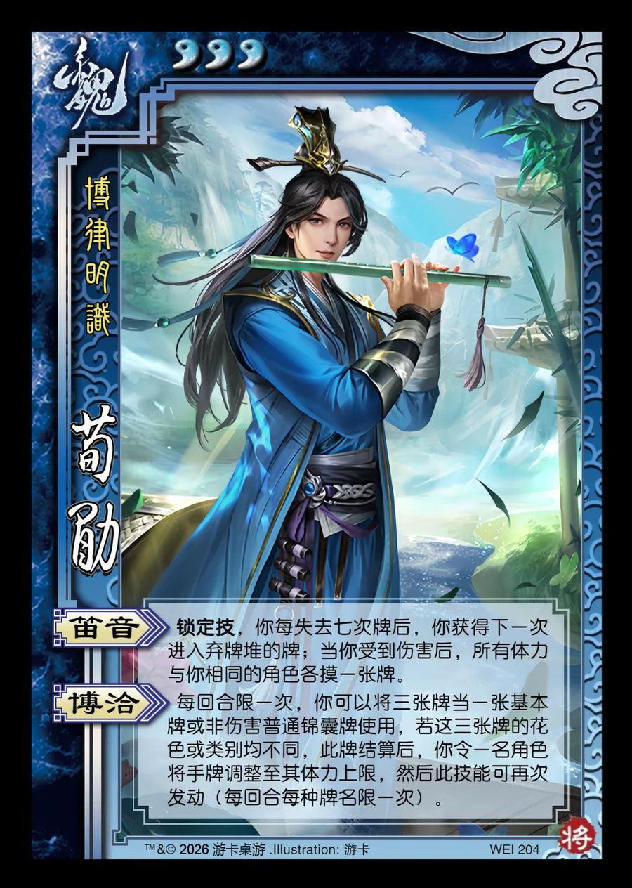

点击卡面查看大图
魏
荀勖
♥3博律明识
笛音锁定技
锁定技，你每失去七次牌后，你获得下一次进入弃牌堆的牌；当你受到伤害后，所有体力与你相同的角色各摸一张牌。
博洽
每回合限一次，你可以将三张牌当一张基本牌或非伤害普通锦囊牌使用，若这三张牌的花色或类别均不同，此牌结算后，你令一名角色将手牌调整至其体力上限，然后此技能可再次发动（每回合每种牌名限一次）。

点击卡面查看大图
博律明识
锁定技，你每失去七次牌后，你获得下一次进入弃牌堆的牌；当你受到伤害后，所有体力与你相同的角色各摸一张牌。
每回合限一次，你可以将三张牌当一张基本牌或非伤害普通锦囊牌使用，若这三张牌的花色或类别均不同，此牌结算后，你令一名角色将手牌调整至其体力上限，然后此技能可再次发动（每回合每种牌名限一次）。